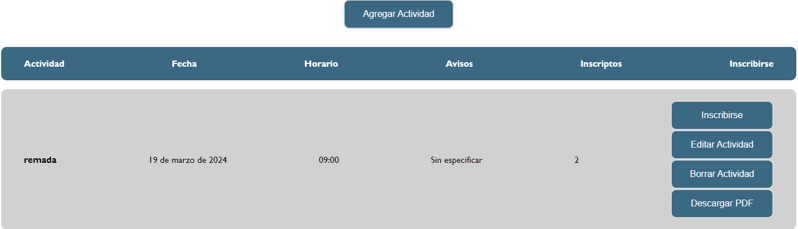
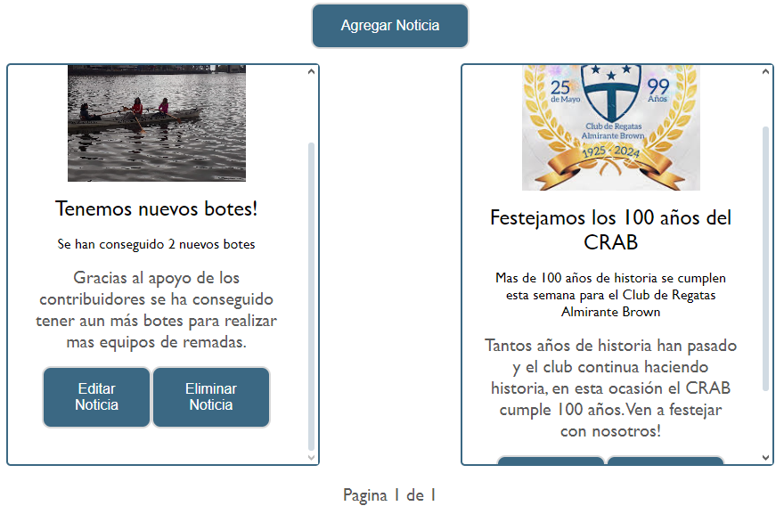
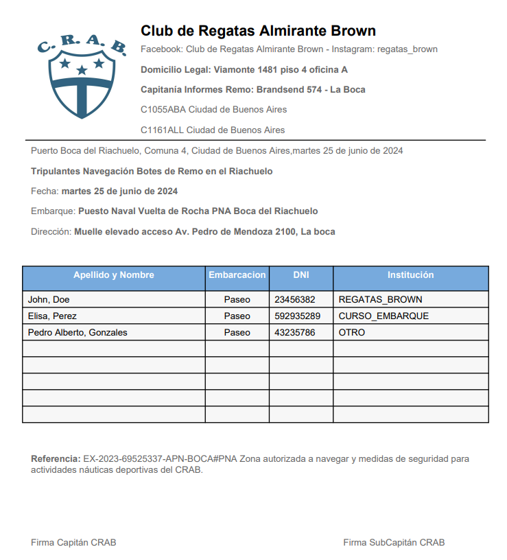

Gestión de Actividades
Los usuarios pueden inscribirse o desuscribirse de actividades directamente desde la tabla. Los administradores tienen acceso a controles adicionales: editar la actividad, eliminarla y descargar un reporte PDF con el listado completo de inscriptos.

Sistema de Noticias
Los administradores pueden publicar noticias con título, copete, descripción y foto desde un formulario sencillo. Las noticias se presentan en tarjetas paginadas, y los administradores pueden editarlas o eliminarlas directamente desde la vista.

Reporte PDF automático
Una vez finalizada la fecha de una actividad, los administradores pueden generar y descargar un PDF con el listado completo de inscriptos, incluyendo nombre, DNI, embarcación e institución.
El documento incluye el encabezado institucional del CRAB, la referencia legal de la actividad y espacio para las firmas del Capitán y SubCapitán.

¿Querés ver más proyectos?
Ver portfolio completo